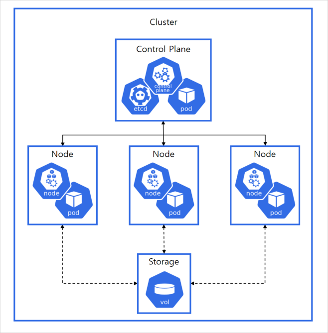
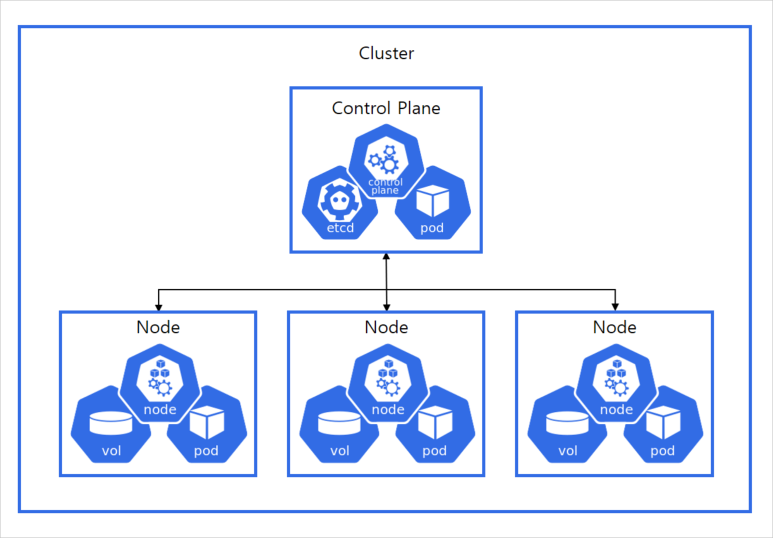
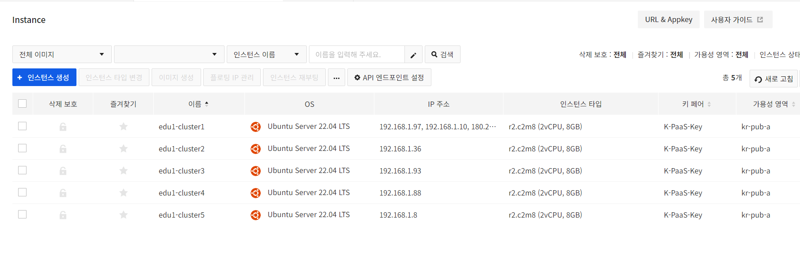
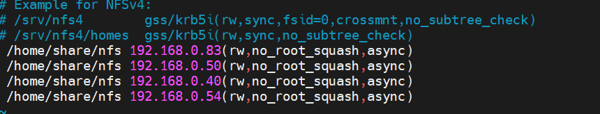
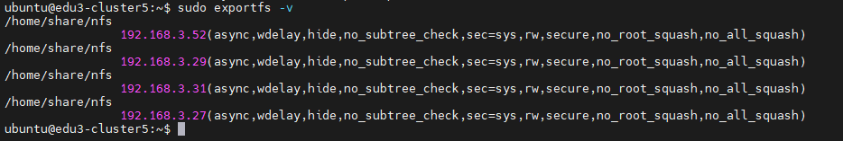
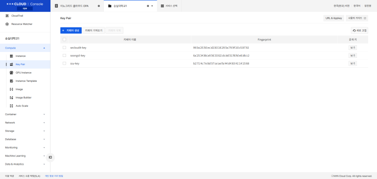
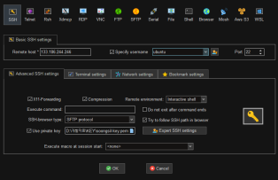
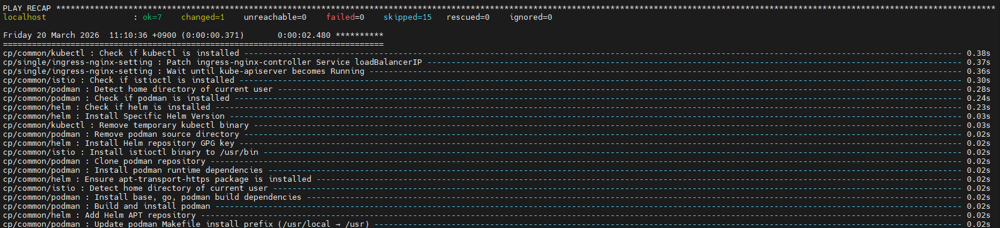
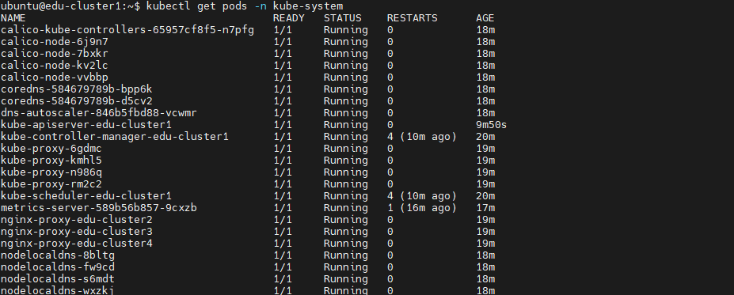

K8S 클러스터 설치
— 4강에서 만든 인스턴스를, 실제 동작하는 Kubernetes 클러스터로
이론이 아니라 절차입니다. 왜 이 순서로 설치하는지, 각 단계의 명령어가 무엇을 바꾸는지, 그리고 실수했을 때 무엇을 확인해야 하는지를 하나의 실습 흐름으로 정리합니다.
이 강의를 보는 순서
- 왜 이 실습을 하는가 — K-PaaS 컨테이너 플랫폼 전체 그림에서 이 강의가 담당하는 범위(①②단계)와, 4강에서 만든 인프라가 여기서 어떻게 쓰이는지
- 설치 전에 무엇을 준비해야 하는가 — 노드 구성, 사양, 방화벽 포트, 로드밸런서 — "설치 스크립트를 돌리기 전에 맞춰둬야 할 조건들"
- 클러스터를 어떻게 설치하는가 — 7단계 실습을 실제 명령어로 하나씩
왜 이 실습을 하는가 — Container Platform 설치개요
K-PaaS 컨테이너 플랫폼을 설치하는 전체 파이프라인은 4단계로 이뤄집니다. 이 강의가 그중 어디까지를 다루는지부터 분명히 짚고 시작합니다.
① 인스턴스 환경구성 → ② 클러스터 설치(Kubespray) → ③ 포털 설치 → ④ 필요한 서비스 설치이 중 ③ 포털 설치와 ④ 필요 서비스 설치(파이프라인 서비스, 소스컨트롤 서비스 등)는 이 45페이지 분량의 강의 범위에는 포함되어 있지 않습니다 — 원본 자료 전체를 확인해도 ①②단계(인스턴스 준비, Kubespray로 Kubernetes Cluster 구성)까지만 다룹니다.
CP 클러스터 배포 흐름을 좀 더 세분화하면 다음과 같습니다.
IaaS(리소스 생성) → Kubespray로 Kubernetes Cluster 구성 → 클러스터 정보 변경 → Container Platform 패키지 배포여기서 "IaaS(리소스 생성)"이 바로 4강에서 이미 끝낸 작업입니다.
4강에서 만든 인스턴스 5대는 건물로 치면 "땅 위에 골조만 세운 상태"입니다. 그 골조 위에 전기·수도·냉난방 배관을 놓는 작업이 이번 5강(Kubespray로 클러스터 만들기)이고, 그 다음에 실제로 사람이 쓸 수 있게 벽지·가구를 채우는 작업이 6강 이후(포털·서비스 설치)입니다. 즉, "서버가 있다"와 "서비스가 된다" 사이에는 아직 여러 단계가 남아 있다는 뜻입니다.
컨테이너 플랫폼은 "인프라만 있다고 저절로 동작하지 않습니다." 4강에서 NHN Cloud 위에 인스턴스 5대(Control Plane 1 + Worker 3 + NFS 1)를 만든 것은 아직 "빈 서버 5대"에 불과합니다. 그 위에 (1) 서버들을 하나의 Kubernetes 클러스터로 묶어주는 소프트웨어(Kubespray가 설치하는 Kubernetes 자체)와, (2) 그 클러스터 위에서 실제로 컨테이너 플랫폼 기능(포털, 파이프라인, 소스컨트롤)을 제공하는 패키지가 순서대로 올라가야 "서비스"가 됩니다. 이 강의는 그중 가장 기초가 되는 "① 인스턴스를 실제 Kubernetes 클러스터로 만드는" 단계에 집중합니다.
이 강의는 4강의 바로 다음 단계로 이어집니다 — "인프라를 코드로 구축했다"(4강, Terraform)면 다음은 "그 인프라 위에 오케스트레이션 레이어를 자동화 도구(Kubespray/Ansible)로 얹는다"(5강)는 것이 실무에서 반복되는 순서입니다. 신규 프로젝트를 처음부터 구축할 때, 또는 온프레미스/클라우드 인프라 위에 자체 Kubernetes 클러스터를 직접 운영해야 하는 조직(관리형 K8s 서비스를 쓰지 않는 경우)이 실제로 거치는 절차이기도 합니다.
설치 전에 무엇을 준비해야 하는가 — 클러스터 설치 준비
클러스터 설치 스크립트를 실행하기 전에, "몇 대의 노드를 어떤 역할로 쓸 것인가", "각 노드의 사양은 충분한가", "노드 간 통신에 필요한 포트는 열려 있는가"를 먼저 맞춰둬야 합니다. 이 조건 중 하나라도 빠지면 Part Ⅲ의 쉘스크립트 배포 단계에서 실패합니다.
01 · 배포 흐름
Part Ⅰ에서 다룬 4단계 파이프라인을, 이번엔 "단일클라우드환경, 단독형배포" 기준으로 더 세분화하면 다음과 같습니다.
시스템환경구성 → (NFS) 서버설치 → SSH KEY 생성및배포 → K-PaaS CP 클러스터 Deployment 다운로드및설치(Kubespray 설치) → 환경변수설정 → Shell 스크립트배포 → 리소스생성확인위 배포 흐름은 그대로 Part Ⅲ의 7단계와 1:1로 대응됩니다. 즉 Part Ⅱ에서 예고한 순서가 곧 Part Ⅲ에서 실습할 순서입니다 — 순서를 예고해 두는 이유는, 뒤에서 각 단계를 하나씩 실행할 때 "지금 전체 중 어디쯤 와 있는지"를 놓치지 않게 하기 위함입니다.
02 · 시스템 구성
노드 구성요소는 역할별로 다음과 같이 나뉩니다.
| 인스턴스 종류 | 개수 | 비고 |
|---|---|---|
| Install | 1개 | Install 인스턴스 구성을 권장 / Control Plane 인스턴스로 대체 가능 |
| Control Plane | 1개 이상 | 테스트 환경에서는 1개, 실제 운영환경에서는 3개 이상 권장 |
| Worker | 1~3개 이상 | NFS 스토리지 사용 시 1개 이상, Rook-Ceph 스토리지 사용 시 3개 이상 |
| Storage | 1개 | NFS 스토리지 사용 시 필요 |
| Load Balancer | 1~2개 | HA Control Plane 구성 시 필요 |
이 실습에서는 Install 인스턴스를 별도로 만들지 않고 Control Plane 인스턴스에서 모든 설치 명령을 직접 실행합니다(표의 "Control Plane 인스턴스로 대체 가능" 옵션을 그대로 택함). 또한 Control Plane이 1개뿐이므로 Load Balancer 구성도 이 실습 범위에서는 생략됩니다.


NFS 방식은 "파일 하나를 여러 노드가 함께 읽고 쓰는" 파일 스토리지라 서버 1대로 단순하게 구성할 수 있지만, 그 1대가 죽으면 전체 스토리지가 멈춥니다. Rook-Ceph는 여러 노드의 디스크를 모아 복제본을 만드는 분산 블록 스토리지라 노드 1~2대가 죽어도 데이터가 유지되지만, 그만큼 최소 3대 이상의 노드가 필요합니다. 이 강의의 실습(Part Ⅲ)은 노드 수가 적은 교육 환경에 맞춰 NFS 방식을 선택해서 진행합니다.
NFS 방식은 "동네에 창고 하나를 지어서 다 같이 열쇠를 나눠 갖고 쓰는 것"과 비슷합니다 — 짓기는 쉽지만 그 창고 하나가 무너지면 다 같이 곤란해집니다. Rook-Ceph는 "각자 집에 조금씩 나눠 보관하되, 같은 물건을 이웃집에도 복사해 두는 것"에 가깝습니다 — 준비할 집(노드)이 여러 채 필요하지만, 한 집에 문제가 생겨도 다른 집의 복사본으로 버틸 수 있습니다.
03 · 설치조건(Prerequisite)
인스턴스 권장 사양은 다음과 같습니다.
- 머신당 deb/rpm 호환 Linux OS(Ubuntu 22.04)가 설치되어야 함
- 머신당 16G 이상의 RAM (최소 사양 8G)
- 머신당 4개 이상의 CPU (최소 사양 2개)
- 클러스터의 모든 시스템 간 완전한 네트워크 연결(인터넷 환경 양호)
4강에서 만든 인스턴스 플레이버는 r2.c2m8(2vCPU, 8GB RAM)입니다 — 이는 원본이 제시하는 "최소 사양"(CPU 2개, RAM 8G) 라인에 정확히 걸쳐 있고, "권장 사양"(CPU 4개, RAM 16G)에는 못 미칩니다. 교육 실습 환경이라 최소 사양으로도 진행은 되지만, 실제 운영 환경에서는 권장 사양을 맞추지 않으면 Part Ⅲ 06단계(쉘스크립트 배포)에서 Ansible 작업이 느려지거나 일부 Pod가 리소스 부족으로 Pending 상태에 머무를 수 있습니다.
주요 소프트웨어 버전은 다음과 같이 검증되어 있습니다.
| 소프트웨어 | 버전 |
|---|---|
| Kubespray | 2.23.0 |
| Kubernetes Native | 1.27.5 |
| CRI-O | 1.27.1 |
| MetalLB | 0.13.9 |
| Ingress Nginx Controller | 1.8.2 |
| Helm | 3.12.3 |
| Istio | 1.19.0 |
| Podman | 3.4.4 |
| OpenTofu | 1.6.0 |
| NFS Common | - |
| nfs-provisioner | 4.0.2 |
| Rook Ceph | 1.12.3 |
| Kubeflow | 1.7.0 |
지원 OS는 Ubuntu 22.04이며 반드시 확인해야 할 항목입니다.
(참고) Kubespray 실행에 필요한 Ansible 의존 Python 패키지 버전도 아래처럼 고정되어 있습니다. 다만 이 값들은 deploy-cp-cluster.sh가 자동으로 맞춰 설치하므로 학습자가 직접 설치할 필요는 없습니다.
- ansible
- 7.6.0
- cryptography
- 41.0.1
- jinja2
- 3.1.2
- jmespath
- 1.0.1
- MarkupSafe
- 2.1.3
- netaddr
- 0.8.0
- pbr
- 5.11.1
- ruamel.yaml / ruamel.yaml.clib
- 0.17.31 / 0.2.7
Kubespray·Kubernetes·CRI-O·CNI(Calico)·Ansible 사이에는 서로 호환되는 버전 조합이 정해져 있습니다. 버전이 어긋나면 설치 스크립트가 아예 실행되지 않거나, 실행돼도 중간에 알 수 없는 오류로 멈추는 경우가 많습니다. 그래서 K-PaaS는 "이 조합으로 검증했다"는 버전 세트를 표로 명시하고, Part Ⅲ 04단계에서 그 버전에 맞는 특정 git 브랜치(branch_v1.7.x)를 통째로 내려받게 합니다.
여기 나온 버전 표(Kubespray 2.23.0, Kubernetes 1.27.5 등)는 "이 조합끼리는 서로 맞춰서 검증해봤다"는 결과입니다. 특정 자동차 모델에 맞춰 나온 부품 세트처럼, 부품(버전) 하나만 다른 연식·다른 회사 것으로 바꾸면 아예 조립이 안 되거나 조립은 되어도 어딘가에서 삐걱거립니다. 그래서 이 강의는 임의의 최신 버전을 받는 대신, 표에 있는 조합 그대로 받도록 브랜치(branch_v1.7.x)를 지정합니다.
04 · 방화벽 · External IP · 로드밸런서
방화벽 필수 포트 — Control Plane 노드:
| 프로토콜 | 포트 | 비고 |
|---|---|---|
| TCP | 111 | NFS PortMapper |
| TCP | 2049 | NFS |
| TCP | 2379-2380 | etcd server client API |
| TCP | 6443 | Kubernetes API Server |
| TCP | 10250 | Kubelet API |
| TCP | 10251 | kube-scheduler |
| TCP | 10252 | kube-controller-manager |
| TCP | 10255 | Read-Only Kubelet API |
| UDP | 4789 | Calico networking VXLAN |
방화벽 필수 포트 — Worker 노드:
| 프로토콜 | 포트 | 비고 |
|---|---|---|
| TCP | 111 | NFS PortMapper |
| TCP | 2049 | NFS |
| TCP | 10250 | Kubelet API |
| TCP | 10255 | Read-Only Kubelet API |
| TCP | 30000-32767 | NodePort Services |
| UDP | 4789 | Calico networking VXLAN |
이 포트들은 클러스터의 서로 다른 통신 목적에 대응합니다 — 6443은 모든 노드가 API Server에 접근하기 위한 창구, 2379-2380은 클러스터 상태를 저장하는 etcd 합의(consensus) 트래픽, 10250/10251/10252/10255는 각각 kubelet·scheduler·controller-manager가 서로 상태를 보고하는 통로, 4789(UDP)는 Calico가 서로 다른 노드의 Pod끼리 통신시키기 위한 오버레이 네트워크(VXLAN) 포트, 30000-32767은 Worker에서 외부로 서비스를 노출하는 NodePort 범위, 111/2049는 NFS 마운트에 필요한 포트입니다. 이 중 하나라도 보안그룹에서 막혀 있으면 클러스터 설치 자체는 진행돼도 노드 간 통신이 끊겨 Pod가 NotReady/Pending에 머무릅니다.
표에 나온 포트들은 건물의 문·창문과 비슷합니다 — 각 문마다 "누가 드나드는 용도"인지가 정해져 있어서, 방화벽에서 특정 포트(문)를 막아버리면 그 용도의 통신만 차단됩니다. 예를 들어 6443번 문이 막히면 kubectl 명령이 아예 클러스터에 닿지 못하고, 4789번 문이 막히면 노드는 켜져 있어도 서로 다른 노드에 있는 Pod끼리 대화를 못 하게 됩니다.
쿠버네티스 서비스 External IP 설정: K-PaaS 컨테이너 플랫폼 포털의 서비스를 Ingress로 외부에 노출하기 위해, Ingress Nginx Controller에 별도의 인터페이스 1개 + Public IP 할당이 필요합니다. (→ Part Ⅲ 05단계의 INGRESS_NGINX_IP 값과 직결)
로드밸런서는 클라우드 유형에 따라 다음과 같이 구성합니다.
| 클라우드 유형 | 로드밸런서 |
|---|---|
| Public | 각 CSP사에서 제공하는 로드밸런서 서비스 이용 |
| Private | Keepalived, HAProxy로 로드밸런서 인스턴스 구성 |
로드밸런서는 HA Control Plane(Control Plane 2개 이상) 구성일 때만 필요하며, 이 실습(Control Plane 1개)에서는 로드밸런서 구성 과정을 생략하고 바로 다음 과정으로 진행합니다.
클러스터 설치 실습 (7단계)
이제 실제로 손을 움직입니다. 아래 7단계는 원본 자료의 순서를 그대로 따르며, 이 순서를 바꾸면 안 됩니다 — 예를 들어 SSH Key 배포 전에 쉘스크립트를 실행하면 Ansible이 노드에 접속하지 못해 실패합니다.
① 환경구성 → ② NFS 서버설치 → ③ SSH key 생성및배포 → ④ Deployment 다운로드 → ⑤ 환경변수입력 → ⑥ 쉘스크립트배포 → ⑦ 설치확인01 · 인스턴스 환경구성
Part Ⅱ에서 정리한 노드 구성요소·사양·방화벽 조건을 실제 인스턴스로 준비해야 그 다음 단계(NFS 설치, Kubespray 설치)를 진행할 대상이 생깁니다. 이 실습에서는 이 단계를 4강(IaaS 구축)에서 Terraform으로 이미 끝냈으므로, 여기서는 "그 결과가 조건에 맞는지 확인"하는 역할입니다.
단일 Control Plane + NFS 스토리지 구성 예시 — 컨트롤플레인 1개, 워커노드 3개, NFS 스토리지 1개, 머신 OS는 모두 Ubuntu 22.04, IP 주소는 사용자마다 다릅니다.
4강에서 만든 인스턴스 확인
Control Plane 1대 + Worker 3대 + NFS 1대, 총 5대가 모두 Ubuntu 22.04로 준비되어 있는지 확인한다.

이후 단계(SSH Key 배포, 환경변수 입력)에서 "몇 번 인스턴스가 어떤 역할인지" 헷갈리면 전체 절차가 꼬입니다. 이 단계에서 Control Plane/Worker1/Worker2/Worker3/NFS라는 역할을 인스턴스별로 명확히 매핑해 두는 것이, 뒤 단계들의 실수를 줄이는 전제 조건입니다.
02 · NFS 스토리지 설치
Kubernetes의 Pod는 어느 Worker 노드에서 실행될지 스케줄러가 정합니다. 그런데 Pod가 저장하는 데이터가 특정 노드의 로컬 디스크에만 있으면, 그 Pod가 다른 노드로 다시 스케줄링됐을 때 데이터에 접근할 수 없습니다. NFS 서버를 별도로 두고 모든 노드가 같은 디렉토리를 공유하게 하면, 어느 노드에서 Pod가 뜨든 동일한 데이터(PersistentVolume)를 쓸 수 있습니다.
Pod는 마치 "오늘은 이 방, 내일은 저 방에서 잠을 자는 사람"과 같습니다. 개인 물건(데이터)을 그때그때 자는 방(Worker 노드)의 서랍에 넣어두면, 방을 옮기는 순간 물건을 두고 온 셈이 됩니다. NFS 서버는 모든 방에서 공통으로 접근할 수 있는 "건물 지하 공용창고"를 하나 두는 것과 같아서, 어느 방에서 자든 같은 창고 열쇠로 같은 물건을 꺼내 쓸 수 있게 해줍니다.
Rook-Ceph 같은 별도 스토리지 클러스터를 구축할 여력이 없는 소규모 환경, 교육/테스트 환경, 또는 "여러 Pod가 같은 파일을 공유해서 읽고 써야 하는" 요구사항(ReadWriteMany)에 NFS 방식이 적합합니다.
※ 아래 절차는 NFS 인스턴스에서 진행합니다.
NFS 인스턴스 접속
ssh -i {ssh 접속키} ubuntu@{nfs를 설치할 인스턴스 ip}APT 업데이트 및 패키지 설치
sudo apt-get update sudo apt-get install -y nfs-common nfs-kernel-server portmap공유 디렉토리 생성 및 권한 부여
sudo mkdir -p /home/share/nfs sudo chmod 777 /home/share/nfs공유 디렉토리 설정
Control Plane 1개 + Worker 3개, 전부 등록합니다.sudo vi /etc/exports등록 형식 예시:
/home/share/nfs 192.168.1.1(rw,no_root_squash,async)실제 화면 예시:
/home/share/nfs {{MASTER_NODE_PRIVATE_IP}} /home/share/nfs {{WORKER1_NODE_PRIVATE_IP}} /home/share/nfs {{WORKER2_NODE_PRIVATE_IP}} /home/share/nfs {{WORKER3_NODE_PRIVATE_IP}}NFS 재시작
sudo /etc/init.d/nfs-kernel-server restart sudo systemctl restart portmap동작 확인
sudo exportfs -v등록한 4개 노드가 모두 출력되어야 정상 동작입니다.

/etc/exports 작성 예시 — Control Plane·Worker 각 노드의 Private IP별로 /home/share/nfs 공유 규칙을 한 줄씩 등록한다.
sudo exportfs -v 실행 결과 예시 — 등록한 4개 노드(Control Plane + Worker 3)의 Private IP가 모두 출력되면 NFS 공유 설정이 정상 반영된 것이다./etc/exports는 "이 디렉토리를 어떤 IP에서 온 요청만 마운트할 수 있게 허용할지"를 정하는 화이트리스트입니다. no_root_squash는 클라이언트(Worker 노드)의 root 권한을 서버에서도 그대로 인정해줘서, Kubernetes가 볼륨에 파일을 쓸 때 권한 문제로 막히지 않게 합니다. 이후 06단계(쉘스크립트 배포)에서 Kubespray가 설치하는 nfs-provisioner가 바로 이 /etc/exports 설정을 보고 PersistentVolume을 만들어줍니다.
/etc/exports에 4개 노드를 전부 등록하지 않거나 Private IP를 잘못 적으면, 지금 당장은 오류가 나지 않다가 나중에(06단계 이후) 특정 Worker 노드에서만 PVC가 Pending 상태로 멈추는 형태로 문제가 드러납니다. exportfs -v에서 등록한 노드 수를 반드시 눈으로 세어 확인할 것.
03 · SSH Key 생성 및 배포
Kubespray는 Ansible 기반 자동화 도구입니다. Ansible은 "제어 노드(Control Plane)가 SSH로 각 대상 노드에 접속해서 설정 파일을 배포하고 명령을 실행"하는 방식으로 동작합니다. 사람이 매번 비밀번호를 입력하며 여러 노드에 순서대로 접속할 수 없기 때문에, 비밀번호 없이(passwordless) 키 기반으로 접속 가능한 상태를 미리 만들어 둬야 06단계의 자동 설치가 중간에 멈추지 않고 끝까지 진행됩니다.
클라우드 플랫폼에 등록하는 키페어에는 두 가지 방식이 있습니다 — (1) 로컬 PC에 이미 가진 키페어의 공개키(Public Key)를 클라우드에 등록하는 방식, (2) 클라우드 플랫폼에서 키페어를 새로 생성하면 공개키는 플랫폼에 등록되고 개인키(Private Key)는 로컬 PC로 다운로드되는 방식(이 개인키는 재발급이 불가능하므로 분실 주의)입니다. 어느 방식이든, 클라우드 플랫폼에 등록된 공개키는 인스턴스 생성 시 그 인스턴스의 ~/.ssh/authorized_keys 파일에 자동으로 저장됩니다.
로컬 PC → 인스턴스 접속(외부 접속): 로컬 PC가 가진 개인키와 짝이 되는 공개키가 인스턴스에 저장돼 있으므로, 로컬 PC의 개인키만 있으면 접속 가능합니다(Host: Public IP, Username: ubuntu, Port: 22, Private Key 지정).
인스턴스 → 인스턴스 접속(내부 접속): 어떤 인스턴스에 개인키 파일을 올려두면, 그 인스턴스에서 같은 서브넷의 다른 인스턴스로도 접속할 수 있습니다.
sudo ssh ubuntu@192.168.xx.xx -i ~/.ssh/private_key새로운 키페어 생성 — 클라우드가 만든 키페어(예: Soongsil Key)는 "사람이 인스턴스에 로그인"하기 위한 것이고, Kubespray 자동설치를 위해서는 "Control Plane이 스스로 다른 노드에 로그인"하는 별도의 키가 필요하기 때문에 새로 생성합니다.
ssh-keygen -t rsa -m PEM -N '' -f $HOME/.ssh/id_rsa생성되면 ~/.ssh/id_rsa(개인키), ~/.ssh/id_rsa.pub(공개키)가 만들어집니다.
새로운 공개키 등록 — Kubespray 자동설치의 대상은 Control Plane + Worker 3대(인스턴스 1~4번)뿐입니다. NFS 서버(5번)는 Kubespray가 설치하는 클러스터 구성원이 아니므로, 새로 만든 id_rsa.pub은 1~4번 인스턴스에만 등록하고 5번(NFS)에는 등록하지 않습니다.
확인 — 1번 인스턴스(Control Plane)에서 id_rsa 개인키를 가지고 2, 3, 4번 인스턴스로 접속을 시도해 정상 등록됐는지 확인합니다.
Kubespray 자동설치 동작 원리: 실제 자동 설치 시, Instance01(Control Plane)이 id_rsa 키를 이용해 Instance01~04(Control Plane + Worker 3)까지 순서대로 접속하며 설치를 진행합니다. 설치가 끝나면 Instance01 = Master Node, Instance02~04 = Worker Node ×3, Instance05 = NFS Server로 구성됩니다.
이 "제어 노드가 대상 노드에 키 기반 SSH로 접속 가능해야 자동화 도구가 동작한다"는 조건은 Kubespray뿐 아니라 Ansible·Terraform 등 원격으로 여러 서버를 제어하는 대부분의 IaC/구성관리 도구에 공통으로 적용되는 실무 원칙입니다.
※ 아래 절차는 Control Plane 노드에서 진행합니다(Install 인스턴스를 만든 경우 그 인스턴스에서 진행 가능).
Control Plane 노드에서 RSA 공개키 생성
ssh-keygen -t rsa -m PEM -N '' -f $HOME/.ssh/id_rsa출력 예시:
Generating public/private rsa key pair. Your identification has been saved in /home/ubuntu/.ssh/id_rsa Your public key has been saved in /home/ubuntu/.ssh/id_rsa.pub The key fingerprint is: (생략…)$ ssh-keygen -t rsa -m PEM -N '' -f $HOME/.ssh/id_rsa Generating public/private rsa key pair. Your identification has been saved in /home/ubuntu/.ssh/id_rsa Your public key has been saved in /home/ubuntu/.ssh/id_rsa.pub The key fingerprint is: (생략…)예시 화면 · 참고용 fingerprint 등 실제 값은 인스턴스마다 다르며, 이 화면은 ssh-keygen 명령이 정상 실행되면 id_rsa(개인키)·id_rsa.pub(공개키)가 /home/ubuntu/.ssh/ 아래 생성됐다는 메시지가 이런 형태로 출력된다는 것을 보여주는 예시다.
RSA 공개키 출력 및 복사
cat ~/.ssh/id_rsa.pub$ cat ~/.ssh/id_rsa.pub ssh-rsa AAAAB3NzaC1yc2EAAAADAQABAAABAQC5QrbqzV6g4iZT4iR1u+EK …(생략)예시 화면 · 참고용 실제 공개키 문자열은 인스턴스마다 다르며, 이 화면은 cat 명령으로 공개키를 출력해 복사하는 절차를 보여주기 위한 예시다 — 이렇게 얻은 값을 Control Plane과 Worker 3대의 authorized_keys에 붙여넣는다.
Control Plane의 authorized_keys 파일 마지막 줄 아래에 공개키 붙여넣기
Install 인스턴스를 만든 경우 그곳에도 붙여넣어야 합니다.vi .ssh/authorized_keysWorker 노드 3개에도 모두 동일하게 반복
NFS 노드는 제외합니다.

~/.ssh/authorized_keys에 자동으로 저장된다.
목적이 다른 두 키를 구분하는 것이 핵심입니다 — 클라우드가 만든 키(Soongsil Key 등)는 "사람 → 인스턴스" 로그인용, 새로 만든 id_rsa는 "Control Plane → 나머지 노드" 자동화용입니다. 그리고 Kubespray의 설치 대상이 Control Plane+Worker(4대)로 한정되므로, id_rsa.pub 배포 대상도 그 4대로 한정됩니다.
클라우드가 만들어준 열쇠(Soongsil Key 등)는 "사람이 현관문을 여는 집 열쇠"이고, 이번에 새로 만든 id_rsa는 "집주인이 다른 집들을 대신 드나들 수 있게 만든 마스터키"라고 생각하면 됩니다. Kubespray는 사람이 아니라 프로그램이 자동으로 여러 노드를 돌아다니며 설치 작업을 해야 하므로, 이 마스터키(id_rsa)를 Control Plane과 Worker 3대에만 미리 복사해 두는 것입니다.
authorized_keys에 새 공개키를 붙여넣을 때 기존 내용을 지우지 말고 마지막 줄 아래에 추가해야 합니다 — 덮어쓰면 클라우드가 등록해 둔 최초 공개키가 사라져 로컬 PC에서의 외부 접속(Public Key)이 끊길 수 있습니다. 또한 Worker 노드 3대 전부에 빠짐없이 등록해야 하며, NFS 서버는 등록 대상에서 제외한다는 점을 다시 한번 확인할 것.
04 · Deployment 다운로드
Kubespray를 처음부터 직접 설정하는 대신, K-PaaS가 이미 검증해 둔 Ansible 플레이북 세트(cp-deployment)를 그대로 받아 쓰면 설치 시간과 설정 실수를 줄일 수 있습니다.
이 단계부터는 Control Plane 노드에서만 진행합니다(Install 인스턴스를 만든 경우 그 인스턴스에서 진행 가능).
클러스터 Deployment 다운로드
git clone https://github.com/K-PaaS/cp-deployment.git -b branch_v1.7.xDownload URL:
https://github.com/k-paas/cp-deployment$ git clone https://github.com/K-PaaS/cp-deployment.git -b branch_v1.7.x Cloning into 'cp-deployment'... remote: Enumerating objects: (생략) remote: Counting objects: 100% (생략) remote: Compressing objects: 100% (생략) Receiving objects: 100% (생략), done. Resolving deltas: 100% (생략), done.예시 화면 · 참고용 실제 출력되는 객체 수·용량 등의 숫자는 그 시점의 저장소 상태에 따라 달라지며, 이 화면은 git clone 명령의 일반적인 출력 형태를 보여주기 위한 예시다.
브랜치를 branch_v1.7.x로 명시하는 이유는, Part Ⅱ에서 확인한 "검증된 버전 조합"(Kubespray 2.23.0 / Kubernetes 1.27.5 / CRI-O 1.27.1 등)이 이 브랜치 기준으로 맞춰져 있기 때문입니다. 다른 브랜치(예: main)를 받으면 버전 조합이 달라져 이후 환경변수·스크립트가 호환되지 않을 수 있습니다.
05 · 환경변수 정의
Ansible이 "어떤 IP의 어떤 노드를 어떤 역할로 설치할지"는 환경마다 다릅니다. 이 정보를 플레이북 코드 안에 직접 박아 넣으면 노드 구성이 바뀔 때마다 코드를 고쳐야 합니다. 값을 별도의 변수 파일(cp-cluster-vars.sh)로 분리해 두면, 노드 구성이 달라져도 이 파일만 다시 채워서 동일한 설치 스크립트를 재사용할 수 있습니다 — 1강에서 다룬 "12 Factor App"의 3번 원칙("설정은 환경에 저장")과 같은 원리입니다.
cp-cluster-vars.sh는 요리 레시피의 "재료 목록" 같은 파일입니다. 레시피(설치 스크립트) 자체는 그대로 두고, 그날그날 재료의 양(IP 주소, 노드 개수)만 이 목록에 채워 넣으면 같은 레시피로 다른 결과물(다른 클러스터)을 만들 수 있습니다. 재료 목록과 조리법을 분리해두면, 다음에 다른 조합으로 요리할 때 조리법을 새로 쓸 필요가 없다는 뜻입니다.
실무에서 인프라 자동화 스크립트를 여러 클러스터/환경(개발·스테이징·운영)에 재사용해야 할 때 항상 이런 "변수 파일 + 실행 스크립트" 조합을 씁니다.
클러스터 설치 경로로 이동
cd cp-deployment/single/환경변수 파일 열기
vi cp-cluster-vars.shControl Plane 노드 설정 입력
# Control Plane (Master) 노드 개수 (예: 1, 3, 5 ...) KUBE_CONTROL_HOSTS=1 # Control Plane (Master) 노드 정보 — 노드 개수에 맞춰 설정 MASTER1_NODE_HOSTNAME=edu-cluster1 MASTER1_NODE_USER=ubuntu MASTER1_NODE_PRIVATE_IP=192.168.xx.xx MASTER1_NODE_PUBLIC_IP=xx.xx.xx.xx # MASTER2_NODE_HOSTNAME / MASTER3_NODE_HOSTNAME 등은 # 컨트롤플레인이 2대 이상일 때만 기재LoadBalancer 설정
Control Plane 2개 이상일 때만 필수입니다.# 외부 로드밸런서 도메인 또는 IP LOADBALANCER_DOMAIN=ETCD 노드 설정
Control Plane 2개 이상일 때만 필수입니다.# ETCD 구성 방식 (예: external, stacked) # - external : 별도 ETCD 노드 구성 # - stacked : Control Plane 노드에 ETCD가 통합된 구성 ETCD_TYPE= # ETCD_TYPE=external 일 때만, Control Plane 노드 수와 동일하게 기재 ETCD1_NODE_HOSTNAME= ETCD1_NODE_PRIVATE_IP=Worker 노드 설정
# Worker 노드 개수 KUBE_WORKER_HOSTS=3 # Worker 노드 정보 — 개수에 맞춰 설정 WORKER1_NODE_HOSTNAME=edu-cluster2 WORKER1_NODE_PRIVATE_IP=192.168.xx.xx WORKER2_NODE_HOSTNAME=edu-cluster3 WORKER2_NODE_PRIVATE_IP=192.168.xx.xx WORKER3_NODE_HOSTNAME=edu-cluster4 WORKER3_NODE_PRIVATE_IP=192.168.xx.xxStorage 설정
# Storage 구성 방식 (예: nfs, rook-ceph) STORAGE_TYPE=nfs # STORAGE_TYPE='nfs'일 때 NFS 서버 Private IP NFS_SERVER_PRIVATE_IP=192.168.xx.xxMetalLB 설정
# MetalLB Address Pool 범위 (예: 192.168.0.150-192.168.0.160) METALLB_IP_RANGE=192.168.xx.150-192.168.xx.160 # Ingress Nginx Controller LoadBalancer Service용 External IP INGRESS_NGINX_IP=192.168.xx.xxKyverno 설정
# Kyverno 설치 여부 (예: Y, N) # - Y : 설치, PSS(Pod Security Standards) 및 cp-policy 정책 # (네임스페이스 간 네트워크 격리) 자동 적용 # - N : 설치하지 않음 INSTALL_KYVERNO=NCSP LoadBalancer Controller 설정 (선택)
# CSP 설정 (예: NHN, NAVER) CSP_TYPE= # NHN Cloud 환경변수 (CSP_TYPE=NHN 일 때 필수 입력) NHN_USERNAME= NHN_PASSWORD= NHN_TENANT_ID= NHN_VIP_SUBNET_ID= NHN_API_BASE_URL=https://kr1-api-network-infrastructure.nhncloudservice.com
환경변수 그룹을 요약하면 다음과 같습니다.
| 그룹 | 필수 여부 | 핵심 변수 |
|---|---|---|
| Control Plane | 항상 필수 | KUBE_CONTROL_HOSTS, MASTER{n}_NODE_HOSTNAME/USER/PRIVATE_IP/PUBLIC_IP |
| LoadBalancer | Control Plane 2개↑일 때만 | LOADBALANCER_DOMAIN |
| ETCD | Control Plane 2개↑일 때만 | ETCD_TYPE(external/stacked), ETCD{n}_NODE_HOSTNAME/PRIVATE_IP |
| Worker | 항상 필수 | KUBE_WORKER_HOSTS, WORKER{n}_NODE_HOSTNAME/PRIVATE_IP |
| Storage | 항상 필수 | STORAGE_TYPE(nfs/rook-ceph), NFS_SERVER_PRIVATE_IP |
| MetalLB | 항상 필수 | METALLB_IP_RANGE, INGRESS_NGINX_IP |
| Kyverno | 항상 필수(Y/N 선택) | INSTALL_KYVERNO |
| CSP LB Controller | 선택 | CSP_TYPE(NHN/NAVER) + 인증정보 |
MASTER*/WORKER* 변수는 Ansible이 접속할 노드 목록(inventory)을 자동으로 만드는 데 쓰이고, METALLB_IP_RANGE는 클러스터 밖에서 서비스에 접근할 External IP 풀을, INGRESS_NGINX_IP는 Ingress Controller가 고정으로 붙잡을 IP를 지정합니다. 이 값들이 틀리면 06단계의 설치 자체는 성공해도 서비스가 외부에 노출되지 않는 문제로 이어집니다.
이 실습처럼 Control Plane이 1개뿐인 구성에서는 LOADBALANCER_DOMAIN/ETCD_TYPE/ETCD*_NODE_*를 비워둬야 정상입니다(2개 이상일 때만 필수). 반드시 채워야 하는 항목(KUBE_CONTROL_HOSTS, MASTER1_*, KUBE_WORKER_HOSTS, WORKER*_*, STORAGE_TYPE, NFS_SERVER_PRIVATE_IP, METALLB_IP_RANGE, INGRESS_NGINX_IP, INSTALL_KYVERNO)와 "조건부로만 채우는" 항목을 혼동하지 않도록 주의.
06 · 쉘스크립트 배포
환경변수까지 다 채운 상태에서, 실제로 "그 값대로 클러스터를 설치"하는 실행 단계가 필요합니다. 하나의 스크립트가 필요 패키지 설치 → 환경변수 반영 → Ansible playbook 실행까지 순서대로 자동 수행해줘서, 사람이 각 명령을 일일이 순서대로 실행하다 생기는 실수를 없앱니다.
이 단계부터 실제로 클러스터가 만들어지는, 실습의 핵심 순간입니다. 노드 수·사양에 따라 수 분~수십 분이 걸릴 수 있습니다.
쉘스크립트를 통해 설치 진행
./deploy-cp-cluster.sh내부 동작: 필요 패키지 설치 → 클러스터 설치 환경변수 설정 → Ansible playbook을 통한 컨테이너 플랫폼 클러스터 설치를 순차적으로 진행합니다.
예시 화면 · 참고용 ok/changed/skipped의 실제 숫자(xxx)는 실행할 때마다 달라지며, 확인해야 할 핵심은 노드(Control Plane 1 + Worker 3)마다 failed=0인지 여부다.

deploy-cp-cluster.sh 실행 중 Ansible이 출력하는 PLAY RECAP 로그 예시 — 각 작업이 ok/changed/skipped/failed 건수로 집계되며, failed=0이면 지금까지의 작업이 문제없이 끝났다는 뜻이다.이 스크립트가 실행하는 Ansible playbook은 03단계에서 배포해 둔 id_rsa 키로 Control Plane이 Worker 노드들에 접속해, kubelet·kube-proxy 등 필요한 컴포넌트를 순서대로 설치하고 CRI-O(컨테이너 런타임)·Calico(CNI)·(설정에 따라) MetalLB/Ingress Nginx 등을 배치합니다. 앞 단계(03 SSH Key, 방화벽 포트, NFS 설정)가 하나라도 빠져 있으면 이 단계에서 특정 task가 실패로 멈춥니다.
./deploy-cp-cluster.sh 하나를 실행하는 것은 공장의 "시작 버튼"을 한 번 누르는 것과 비슷합니다. 버튼을 누르면 그 뒤로 사람이 하나하나 손대지 않아도, 필요한 부품 준비 → 조립 → 배선까지 미리 정해둔 순서(Ansible playbook)대로 자동으로 진행됩니다. 다만 이 자동 공정이 잘 돌아가려면 앞서 준비해 둔 부품(02단계 NFS 설정, 03단계 SSH 키, Part Ⅱ의 방화벽 포트)이 미리 갖춰져 있어야 한다는 점도 같은 비유로 이해할 수 있습니다.
실행 로그의 PLAY RECAP에서 failed=가 0이 아니면, 대개 이전 단계의 문제(SSH 키 미배포, 방화벽 포트 미개방, RAM/CPU 사양 부족, /etc/exports 노드 누락)로 돌아가서 원인을 확인해야 합니다. 스크립트를 재실행하기 전에 어느 단계에서 실패했는지 로그를 위에서부터 훑어보는 습관이 필요합니다.
07 · 클러스터 설치확인
스크립트가 "에러 없이 끝났다"는 것과 "클러스터가 실제로 정상 동작한다"는 것은 다릅니다. 노드가 준비(Ready) 상태인지, 시스템 Pod들이 모두 떠 있는지 직접 확인해야 설치가 끝났다고 말할 수 있습니다.
설치 직후는 물론, 이후 클러스터를 운영하는 동안에도 상태를 점검할 때 반복해서 쓰는 가장 기본적인 명령입니다.
Kubernetes Node 확인
kubectl get nodes$ kubectl get nodes NAME STATUS ROLES AGE VERSION edu-cluster1 Ready control-plane 1d v1.27.5 edu-cluster2 Ready <none> 1d v1.27.5 edu-cluster3 Ready <none> 1d v1.27.5 edu-cluster4 Ready <none> 1d v1.27.5예시 화면 · 참고용 AGE 등 실제 값은 설치 시점에 따라 달라지며, 4개 노드(Control Plane 1 + Worker 3) 모두 STATUS가 Ready로 나오면 정상이다.
NFS Provisioner 포함, 전체 Pod 확인
kubectl get pods$ kubectl get pods NAME READY STATUS RESTARTS AGE nfs-client-provisioner-xxxxxxxxxx-xxxxx 1/1 Running 0 1d예시 화면 · 참고용 Pod 이름 뒤에 붙는 해시값은 배포마다 달라지며, STORAGE_TYPE=nfs로 설정했을 때 이 nfs-client-provisioner Pod가 Running으로 떠 있어야 정상이다.
kube-system Namespace의 Pod 확인
kubectl get pods -n kube-system

kubectl get pods -n kube-system 실행 결과 예시 — calico-node·kube-proxy·nodelocaldns 등이 노드 수만큼(Control Plane+Worker 총 4개) STATUS=Running으로 떠 있으면 정상이다.calico-node, kube-proxy, nodelocaldns 같은 컴포넌트가 노드마다 하나씩(이 실습 구성에서는 4개) 떠 있는 이유는, 이들이 데몬셋(DaemonSet)으로 배포되는 "모든 노드에 하나씩 있어야 하는" 컴포넌트이기 때문입니다 — Calico는 노드 간 Pod 통신(CNI)을, kube-proxy는 각 노드에서의 서비스 트래픽 라우팅을 담당합니다. 이런 컴포넌트의 개수가 노드 수와 일치하는지 세어보는 것이 클러스터 상태 점검의 기본입니다.
(부가) 리소스 생성 시 주의사항
사용자가 직접 리소스를 생성할 때, 다음 이름/Prefix는 K-PaaS 컨테이너 플랫폼이 내부적으로 예약해 쓰는 이름이므로 피해야 합니다.
| Resource 명 | 생성 시 제외해야 할 Prefix/이름 |
|---|---|
| 전체 Resource | kube* |
| Namespace | all, kubernetes-dashboard, cp-portal-temp-namespace |
| Role | cp-init-role, cp-admin-role |
| ResourceQuota | cp-low-resourcequota, cp-medium-resourcequota, cp-high-resourcequota |
| LimitRanges | cp-low-limitrange, cp-medium-limitrange, cp-high-limitrange |
| Pod | nodes, resources |
이 이름들은 K-PaaS 컨테이너 플랫폼(포털)이 내부적으로 사용하는 예약어입니다. 사용자가 같은 이름으로 리소스를 만들면 이후 포털 설치·운영 중에 이름 충돌이 발생할 수 있습니다.
(부가) 클러스터 삭제
실습/테스트가 끝났거나 설정을 잘못해서 처음부터 다시 설치해야 할 때, 각 노드에서 수동으로 되돌리는 대신 설치와 대칭되는 삭제 스크립트로 한 번에 정리합니다.
클러스터 삭제
./reset-cp-cluster.sh쉘스크립트를 통해 K-PaaS 컨테이너 플랫폼 클러스터 삭제를 진행합니다.
실전 실습 자료 · 트러블슈팅 (2026-07-10 · 07-13 수업)
이 절은 실제 2026-07-10 · 07-13 수업에서 진행한 실습 원본 파일입니다 — 재구성된 설명이 아니라, 그날 그대로 채워 사용한 환경변수 파일과 수업 중 실제로 겪은 트러블슈팅 기록을 옮긴 것입니다.
01 · 실제 환경변수 파일 원본 — cp-cluster-vars.sh
본문 Part Ⅲ 05단계에서는 cp-cluster-vars.sh의 각 항목을 192.168.xx.xx 같은 placeholder로 설명했습니다. 아래는 2026-07-10 수업에서 그 placeholder들을 실제로 채운 원본 파일입니다 — Control Plane 1대(MASTER1_*), Worker 3대(WORKER1~3_*), NFS 스토리지(NFS_SERVER_PRIVATE_IP), MetalLB 대역(METALLB_IP_RANGE)까지 사설 IP(192.168.30.x)로 실제 채워져 있습니다.
이 코드가 하는 일을 한 줄로 요약하면 — 이 실습 환경의 실제 IP·개수 값을 채워 넣어 바로 실행할 수 있게 만든 cp-cluster-vars.sh 전체 원본입니다.
#!/bin/bash
# --------------------------------------------------------------------
# Control Plane 노드 설정
# --------------------------------------------------------------------
# Control Plane (Master) 노드 개수 (예: 1, 3, 5 ...)
KUBE_CONTROL_HOSTS=1
# Control Plane (Master) 노드 정보
# Control Plane 노드 개수에 맞춰 설정
MASTER1_NODE_HOSTNAME=jinyung0101-master
MASTER1_NODE_USER=ubuntu
MASTER1_NODE_PRIVATE_IP=192.168.30.55
MASTER1_NODE_PUBLIC_IP=133.186.215.97
MASTER2_NODE_HOSTNAME=
MASTER2_NODE_PRIVATE_IP=
MASTER3_NODE_HOSTNAME=
MASTER3_NODE_PRIVATE_IP=
# --------------------------------------------------------------------
# LoadBalancer 설정
# --------------------------------------------------------------------
# Control Plane 노드가 2개 이상일 때 필수 설정
# 외부 로드밸런서 도메인 또는 IP
LOADBALANCER_DOMAIN=
# --------------------------------------------------------------------
# ETCD 노드 설정
# --------------------------------------------------------------------
# ETCD 구성 방식
# Control Plane 노드가 2개 이상일 때 필수 설정 (예: external, stacked)
# - external : 별도 ETCD 노드 구성
# - stacked : Control Plane 노드에 ETCD가 통합된 구성
ETCD_TYPE=
# ETCD_TYPE=external 일 때 필수 설정
# Control Plane 노드 수와 동일 개수로 설정
ETCD1_NODE_HOSTNAME=
ETCD1_NODE_PRIVATE_IP=
ETCD2_NODE_HOSTNAME=
ETCD2_NODE_PRIVATE_IP=
ETCD3_NODE_HOSTNAME=
ETCD3_NODE_PRIVATE_IP=
# --------------------------------------------------------------------
# Worker 노드 설정
# --------------------------------------------------------------------
# Worker 노드 개수
KUBE_WORKER_HOSTS=3
# Worker 노드 정보
# Worker 노드 개수에 맞춰 설정
WORKER1_NODE_HOSTNAME=jinyung0101-worker1
WORKER1_NODE_PRIVATE_IP=192.168.30.18
WORKER2_NODE_HOSTNAME=jinyung0101-worker2
WORKER2_NODE_PRIVATE_IP=192.168.30.56
WORKER3_NODE_HOSTNAME=jinyung0101-worker3
WORKER3_NODE_PRIVATE_IP=192.168.30.29
# --------------------------------------------------------------------
# Storage 설정
# --------------------------------------------------------------------
# Storage 구성 방식 (예: nfs, rook-ceph)
STORAGE_TYPE=nfs
# Storage 구성 방식 'nfs'일 때 NFS 서버 Private IP
NFS_SERVER_PRIVATE_IP=192.168.30.17
# --------------------------------------------------------------------
# MetalLB 설정
# --------------------------------------------------------------------
# MetalLB Address Pool 범위 (예: 192.168.0.150-192.168.0.160)
METALLB_IP_RANGE=192.168.30.150-192.168.30.160
# Ingress Nginx Controller LoadBalancer Service용 External IP
# - 인터페이스 추가 방식 : 인터페이스 Private IP 입력
# - LoadBalance 서비스 방식 : LoadBalance 서비스 Public IP 입력
INGRESS_NGINX_IP=192.168.30.170
# --------------------------------------------------------------------
# Kyverno 설정
# --------------------------------------------------------------------
# Kyverno 설치 여부 (예: Y, N)
# - Y : 설치, PSS (Pod Security Standards) 및 cp-policy 정책 (네임스페이스간 네트워크 격리) 자동 적용
# - N : 설치하지 않음
INSTALL_KYVERNO=N
# --------------------------------------------------------------------
# CSP LoadBalancer Controller 설정
# --------------------------------------------------------------------
# CSP 설정 (예: NHN, NAVER)
CSP_TYPE=
# NHN Cloud 환경 변수 (CSP_TYPE=NHN 일때 필수 입력)
NHN_USERNAME=
NHN_PASSWORD=
NHN_TENANT_ID=
NHN_VIP_SUBNET_ID=
NHN_API_BASE_URL=https://kr1-api-network-infrastructure.nhncloudservice.com
# NAVER Cloud 환경 변수 (CSP_TYPE=NAVER 일때 필수 입력)
NAVER_CLOUD_API_KEY=
NAVER_CLOUD_API_SECRET=
NAVER_CLOUD_REGION=KR
NAVER_CLOUD_VPC_NO=
NAVER_CLOUD_SUBNET_NO=이 실습은 Control Plane 1대 구성이므로, LOADBALANCER_DOMAIN·ETCD_TYPE·ETCD*_NODE_*·CSP_TYPE 이하(NHN/NAVER 인증정보)는 본문 05단계에서 설명한 대로 전부 빈 값으로 남아 있습니다. 반드시 채워야 하는 MASTER1_*·WORKER1~3_*·STORAGE_TYPE·NFS_SERVER_PRIVATE_IP·METALLB_IP_RANGE·INGRESS_NGINX_IP·INSTALL_KYVERNO만 실제 값으로 채워져 있는 것을 확인할 수 있습니다.
02 · SSH known_hosts 충돌 해결
Kubespray 자동 설치가 끝난 뒤 같은 인스턴스에 다시 SSH로 접속하면, 서버가 재설치되었거나 IP가 바뀐 것도 아닌데 다음과 같은 REMOTE HOST IDENTIFICATION HAS CHANGED 경고와 함께 접속이 차단되는 경우가 있었습니다(Kubespray 자동 설치 과정에서 known_hosts가 해시 처리되면서 발생하는 것으로 추정 — 정확한 원인은 원본 자료에도 "정확한 원인 파악 필요"로 남아 있습니다).
@@@@@@@@@@@@@@@@@@@@@@@@@@@@@@@@@@@@@@@@@@@@@@@@@@@@@@@@@@@
@ WARNING: REMOTE HOST IDENTIFICATION HAS CHANGED! @
@@@@@@@@@@@@@@@@@@@@@@@@@@@@@@@@@@@@@@@@@@@@@@@@@@@@@@@@@@@
IT IS POSSIBLE THAT SOMEONE IS DOING SOMETHING NASTY!
Someone could be eavesdropping on you right now (man-in-the-middle attack)!
It is also possible that a host key has just been changed.
The fingerprint for the ED25519 key sent by the remote host is
SHA256:7XZz4hw2UMQfZ0E+KLwpmWkujz7m2sbxwMbMGKTQvQo.
Please contact your system administrator.
Add correct host key in /root/.ssh/known_hosts to get rid of this message.
Offending ED25519 key in /root/.ssh/known_hosts:5
Host key for 192.168.0.44 has changed and you have requested strict checking.
Host key verification failed.root 권한으로 전환 후 이동
sudo -i cd /root/.ssh/문제가 되는 IP만 known_hosts에서 제거
base64로 인코딩된 known_hosts 원본 내용 전체를 옮기는 대신, 실제로 문제를 해결한 핵심 명령만 남깁니다 — 인스턴스 5대의 IP 각각에 대해 반복합니다.ssh-keygen -R 192.168.0.72 ssh-keygen -R 192.168.0.89 ssh-keygen -R 192.168.0.44 ssh-keygen -R 192.168.0.12 ssh-keygen -R 192.168.0.106실행 결과 예시(IP 1개당):
# Host 192.168.0.44 found: line 5 /root/.ssh/known_hosts updated. Original contents retained as /root/.ssh/known_hosts.old# ssh-keygen -R 192.168.0.44 # Host 192.168.0.44 found: line 5 /root/.ssh/known_hosts updated. Original contents retained as /root/.ssh/known_hosts.old실제 실습 결과 문제가 된 IP(192.168.0.44)의 known_hosts 항목이 지워지고, 기존 내용은 known_hosts.old로 백업됐다는 실제 출력이다.
SSH 재접속 확인
sudo ssh ubuntu@192.168.0.72 -i .ssh/id_rsa sudo ssh ubuntu@192.168.0.89 -i .ssh/id_rsa sudo ssh ubuntu@192.168.0.44 -i .ssh/id_rsa sudo ssh ubuntu@192.168.0.12 -i .ssh/id_rsa sudo ssh ubuntu@192.168.0.106 -i .ssh/soongsil-key.pem재접속 후
known_hosts에 각 IP의 호스트 키가 텍스트 그대로(해시되지 않고) 다시 저장되면 정상입니다.
원본 자료에는 이 외에도 (2) vi로 known_hosts 내용을 직접 열어 지우는 방법, (3)(4) sudo rm -rf /root/.ssh/known_hosts로 파일 자체를 삭제하는 방법도 함께 정리되어 있습니다. 파일 전체 삭제는 원래 다른 SSH 접속 정보까지 함께 날릴 수 있어 권장되지 않지만, 이 실습처럼 인스턴스 5대의 정보만 들어있는 환경에서는 삭제해도 무방하며, 삭제해도 재접속 시 known_hosts가 자동으로 재생성됩니다.
03 · Openbao(Vault) Unseal 절차
Openbao(Vault) Pod가 재시작되면 Vault가 Sealed 상태로 되돌아가 아래처럼 READY 0/1로 멈춥니다.
kubectl get pod -n openbao
NAME READY STATUS RESTARTS AGE
openbao-0 0/1 Running 5 6d18h
openbao-agent-injector-6567764cc9-7zx8l 1/1 Running 3 4d20hVault는 비밀번호·인증키 같은 민감한 정보를 보관하는 금고입니다. 이 금고가 재시작되면 자동으로 다시 잠기는데(Sealed), 그 잠금을 풀려면(Unseal) 미리 나눠 가진 열쇠 조각 여러 개를 순서대로 넣어줘야 합니다. 아래 절차는 그 열쇠 조각 2개를 순서대로 입력해 금고 문을 다시 여는 과정입니다.
배포된 Vault의 Unseal Key 확인
cat ~/workspace/container-platform/cp-portal-deployment/secmg/unseal-keyopenbao-0 Pod에 접속
kubectl exec -it openbao-0 -n openbao -- shUnseal 키 2개를 순서대로 입력
/ $ vault operator unseal Unseal Key (will be hidden): <본인 Unseal Key 1> / $ vault operator unseal Unseal Key (will be hidden): <본인 Unseal Key 2> / $ exit정상 작동 확인
kubectl get pod -n openbao NAME READY STATUS RESTARTS AGE openbao-0 1/1 Running 5 6d18h openbao-agent-injector-6567764cc9-7zx8l 1/1 Running 3 4d20hopenbao-0이READY 1/1로 바뀌면 Unseal이 정상적으로 완료된 것입니다.$ kubectl get pod -n openbao NAME READY STATUS RESTARTS AGE openbao-0 1/1 Running 5 6d18h openbao-agent-injector-6567764cc9-7zx8l 1/1 Running 3 4d20h실제 실습 결과 Unseal 전에는 openbao-0이 READY 0/1이었다가, Unseal Key 2개를 순서대로 입력한 뒤 READY 1/1로 바뀐 실제 화면이다.
04 · KeyCloak 세션 제한 해제
KeyCloak 기본 설정에는 동일 계정의 동시 세션 수를 제한하는 User session count limiter가 걸려 있어, 실습 중 여러 사람이 같은 관리자 계정으로 동시에 로그인하면 먼저 접속해 있던 세션이 끊기는 문제가 발생했습니다.
이 명령이 하는 일을 한 줄로 요약하면 — KeyCloak 관리자 화면에 접속할 주소(HOSTS)를 확인하는 명령입니다.
kubectl get ing -n keycloak
NAME CLASS HOSTS ADDRESS PORTS AGE
keycloak nginx keycloak.xx.xx.xx.xx.nip.io 192.168.9.8 80, 443 6d18h실제 실습 결과 HOSTS 열의 주소(keycloak.xx.xx.xx.xx.nip.io)로 접속해 관리자 계정으로 로그인한다.
Ingress 주소로 접속 후 관리자 로그인
위 HOSTS 주소(keycloak.xx.xx.xx.xx.nip.io)로 접속해 관리자 계정(ID:admin/ PWD:<본인 비밀번호>)으로 로그인합니다.세션 제한 값 변경
왼쪽 상단 Manage realms에서cp-realm으로 전환 → Authentication → Browser with user session count limiter → User session count limiter의 설정 아이콘 클릭 → Maximum concurrent sessions for each user per keycloak client 값을-1로 변경 → Save.
05 · k9s 설치
kubectl get pods, kubectl get nodes처럼 리소스를 하나씩 조회하는 대신, 클러스터 상태를 터미널 UI 하나로 실시간으로 보고 조작할 수 있는 k9s를 설치해 두면 07단계(클러스터 설치확인) 이후의 상태 점검·운영 작업이 훨씬 빨라집니다.
작업 폴더 생성
mkdir k9s; cd k9s바이너리 다운로드
wget https://github.com/derailed/k9s/releases/download/v0.26.7/k9s_Linux_x86_64.tar.gz압축 해제
tar zxvf k9s_Linux_x86_64.tar.gz실행 경로로 이동
sudo mv k9s /usr/local/bin/k9s
06 · 사용자 인증서 발급
쿠버네티스 사용자 인증을 위해 사용자 인증서를 발급합니다. OpenSSL로 개인키(key) → 인증서 서명 요청(csr) → 인증 기관(CA) 서명을 거친 인증서(crt) 순서로 만듭니다.
- key — 서버(사용자)의 신원을 증명하는 개인키이며, 나중에 crt 인증서와 쌍을 이뤄 인증에 사용됩니다.
- csr — 개인키 정보 및 도메인·조직·위치 정보가 담긴, CA에 인증서 발급을 요청하기 위한 파일입니다.
- crt — CA가 csr 내용을 확인한 뒤 발급하는 실제 인증서 파일로, 사용자의 공개키와 CA의 서명이 포함됩니다.
이 절차는 여권을 새로 만드는 과정과 비슷합니다 — key(개인키)는 "내 신원을 증명하는 도장"을 새로 파는 것, csr은 "이 도장으로 여권을 발급해 달라"는 신청서를 작성해 제출하는 것, crt는 발급 기관(CA)이 신청서를 확인하고 도장을 찍어 내어준 "완성된 여권"이라고 보면 됩니다.
사용자 개인키 생성
openssl genrsa -out ssu-user.key 2048crt 발급을 위한 csr 생성
openssl req -new -key ssu-user.key -subj "/CN=ssu-user/O=Kubernetes Korea Group" -out ssu-user.csrCA 서명으로 crt 생성
sudo openssl x509 -req -in ssu-user.csr -CA /etc/kubernetes/ssl/ca.crt -CAkey /etc/kubernetes/ssl/ca.key -CAcreateserial -out ssu-user.crt -days 10000
07 · kubectl 자동완성
하위 명령·리소스 이름을 매번 전부 입력하는 대신 bash 자동완성을 설정해 두면 kubectl을 다루는 속도가 빨라집니다. (참고: kubectl 치트 시트)
$ source <(kubectl completion bash) # bash-completion 패키지를 먼저 설치한 후, bash의 자동 완성을 현재 셸에 설정한다.
$ echo "source <(kubectl completion bash)" >> ~/.bashrc # 자동 완성을 bash 셸에 영구적으로 추가한다.
$ echo "alias k=kubectl" >> ~/.bashrc
$ echo "complete -o default -F __start_kubectl k" >> ~/.bashrc
$ source ~/.bashrc08 · Docker Hub Pull Rate Limit 확인
06단계(쉘스크립트 배포)에서 Ansible이 여러 컨테이너 이미지를 순서대로 pull 받는데, 이 중 일부가 이유 없이 실패하는 경우 흔한 원인 중 하나가 Docker Hub의 익명/무료 계정 pull rate limit(시간당 요청 횟수 제한)입니다. 아래 명령으로 현재 계정(또는 IP)의 pull 가능 상태를 미리 확인해볼 수 있습니다.
이 코드가 하는 일을 한 줄로 요약하면 — 지금 이 계정(또는 IP)에서 Docker 이미지를 몇 번 더 받을 수 있는지(pull 한도)를 확인하는 명령입니다.
$ sudo snap install jq
$ sudo apt install jq
$ TOKEN=$(curl "https://auth.docker.io/token?service=registry.docker.io&scope=repository:ratelimitpreview/test:pull" | jq -r .token)
$ curl --head -H "Authorization: Bearer $TOKEN" https://registry-1.docker.io/v2/ratelimitpreview/test/manifests/latest 2>&1중요 용어 사전
주요 명령어 목록
| 명령어 | 설명 |
|---|---|
ssh -i {키} ubuntu@{IP} | 원격 인스턴스 SSH 접속 |
sudo apt-get install -y nfs-common nfs-kernel-server portmap | NFS 서버 패키지 설치 |
sudo exportfs -v | NFS 공유 설정·연결 노드 확인 |
ssh-keygen -t rsa -m PEM -N '' -f $HOME/.ssh/id_rsa | Kubespray 자동설치용 RSA 키페어 생성 |
git clone https://github.com/K-PaaS/cp-deployment.git -b branch_v1.7.x | 클러스터 설치 소스 다운로드 |
./deploy-cp-cluster.sh | 클러스터 설치 실행 (Ansible playbook 자동 진행) |
kubectl get nodes | 노드 상태 확인 |
kubectl get pods / kubectl get pods -n kube-system | Pod 상태 확인 |
./reset-cp-cluster.sh | 클러스터 삭제 |
- Kubespray
- Ansible 기반으로 Kubernetes 클러스터 설치를 자동화하는 오픈소스 도구
- Ansible / Playbook
- 여러 서버에 SSH로 접속해 설정을 자동 적용하는 구성관리 도구 / 그 작업 순서를 정의한 파일
- ETCD
- 클러스터 상태를 저장하는 분산 key-value 저장소
- ETCD external / stacked
- external: 별도 ETCD 노드 구성 / stacked: Control Plane 노드에 ETCD가 통합된 구성
- Kubelet API
- 노드의 kubelet이 노출하는 API(포트 10250)
- kube-scheduler
- Pod를 어느 노드에 배치할지 결정하는 컴포넌트(포트 10251)
- kube-controller-manager
- 클러스터의 각종 컨트롤러(레플리카·노드 등)를 관리하는 컴포넌트(포트 10252)
- CRI-O
- Kubernetes용 경량 컨테이너 런타임
- Calico
- 노드 간 Pod 네트워킹을 담당하는 CNI(Container Networking Interface) 플러그인, VXLAN(UDP 4789) 사용
- NodePort
- 30000-32767 포트 범위로 서비스를 클러스터 외부에 노출하는 방식
- MetalLB
- 온프레미스/자체 구축 환경에서 LoadBalancer 타입 서비스에 External IP를 할당해주는 도구
- Ingress Nginx Controller
- HTTP(S) 요청을 규칙에 따라 클러스터 내부 서비스로 라우팅하는 Ingress 컨트롤러
- nfs-provisioner
- NFS 서버를 PersistentVolume으로 자동 프로비저닝해주는 컴포넌트
- Rook Ceph
- 여러 노드의 디스크를 모아 분산 블록 스토리지를 구성하는 Kubernetes 오퍼레이터
- Kyverno
- Kubernetes 정책 관리 엔진 — PSS(Pod Security Standards), 네임스페이스 간 네트워크 격리 정책 등을 적용
- PSS (Pod Security Standards)
- Kubernetes의 Pod 보안 표준(수준별 정책)
- HA Control Plane
- Control Plane을 2개 이상으로 다중화한 구성 — 이 경우 LoadBalancer와 ETCD 구성 방식(external/stacked) 결정이 필요
- id_rsa / id_rsa.pub
- Kubespray 자동설치를 위해 Control Plane에서 새로 생성하는 개인키/공개키 쌍
- authorized_keys
- 어떤 공개키를 가진 사용자의 SSH 접속을 허용할지 등록해 두는 파일
- CSP
- Cloud Service Provider — 이 강의에서는 NHN, NAVER 등 클라우드 제공자를 가리킴
정리 & 다음 강의 연결
4강에서 인프라(인스턴스 5대)를 코드로 만들었다면, 5강은 그 위에 "설치조건 확인 → NFS 설치 → SSH Key 배포 → Deployment 다운로드 → 환경변수 정의 → 쉘스크립트 배포 → 설치확인"의 7단계로 실제 Kubernetes 클러스터를 완성하는 과정입니다.
범위 고지: 이 강의는 K-PaaS 컨테이너 플랫폼 전체 파이프라인(①인스턴스 환경구성 → ②클러스터 설치 → ③포털 설치 → ④필요한 서비스 설치) 중 ①②단계까지만 다룹니다. ③④(포털 설치, 파이프라인/소스컨트롤 서비스 설치)는 이 원본 자료(45p)에 포함되어 있지 않습니다.
1강(이론) → 2강(Container) → 3강(IaaS 이론) → 4강(IaaS 구축) → 5강(K8S 클러스터 설치)이 "개념 이해 → 인프라 코드화 → 그 위에 클러스터 설치"로 이어지는 하나의 실습 파이프라인이었습니다. 다음 강의(6강 · PaaS 설치)에서 이 흐름이 이어집니다.